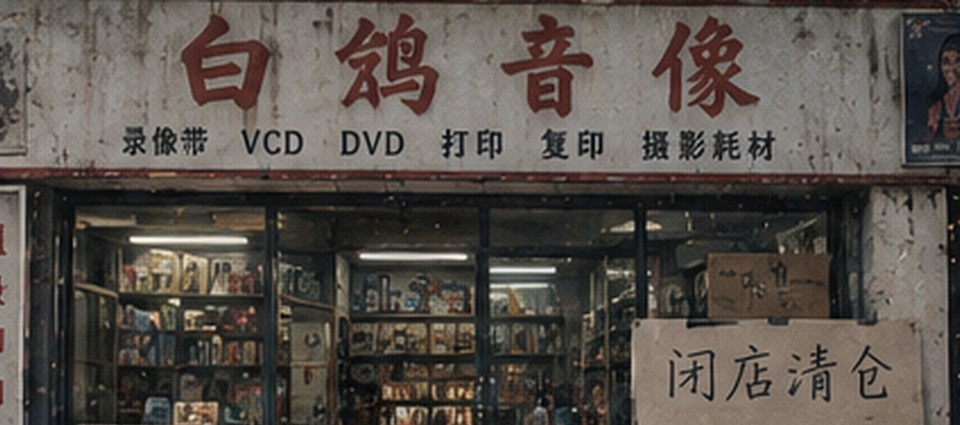

闭店说明 / 09-20
白鸽开了二十八年，房租到期不再续。
门口挂出“闭店清仓”以后，仍然有人来问旧碟、打印机和以前寄放的东西。能找到盒子、还能正常读的碟会陆续处理；带姓名或旧业务编号的物件先单独留置。
- 最后营业
- 2026年9月30日
- 清仓自取
- 14:00—19:00
- 电话
- 原店号已停用
- 未认领物
- 1 件
09 / 23
清仓记录 · 未认领物
旧柜台第二层抽屉里，还压着一袋2009年的东西。
透明袋里有一张刻录盘、一张SD卡和旧取件纸。袋面能辨认出“明天来取”，但现行清仓表里没有对应记录。
最近更新
2026年9月旧照片新增11张
有一张拍到门口黄狗，有一张只剩半截招牌。年份记不清的先空着。
打印柜暂不出售
柜里还有会员卡、旧价目单和几张别人存下来的相机卡，要先分完。
缺盘连续剧已另箱登记
盒子在、盘没了的按废品记。以前押金没退的，也别隔十几年突然来算利息。
门口那条黄狗不是白鸽养的
隔壁老板到现在还坚持说算半只。
复印机最后一包A4纸已拆
只做店里整理用，不再接批量复印。
店务便笺
最后一周门头灯最右边一管还是不亮，关店前不修了。
透明碟盒完整的留下换盒，裂的统一打包。
旧海报卷起来的先不拆，墙上胶带太久的直接留着。
门口木凳隔壁说要，等最后一天再搬。
最后一件登记物已由家属取走，未认领物数量改为0。